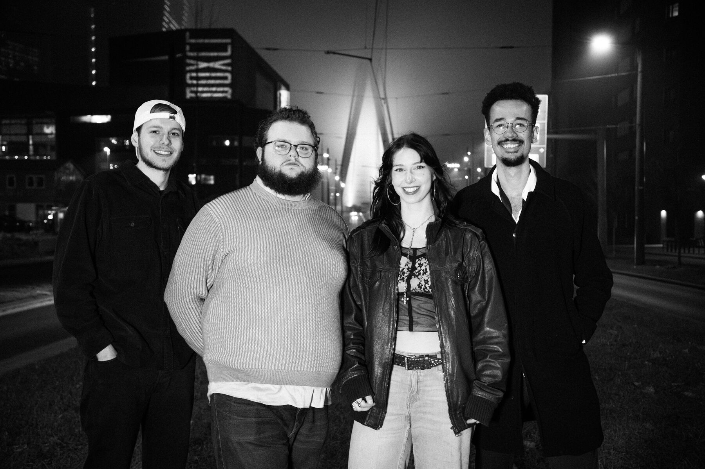
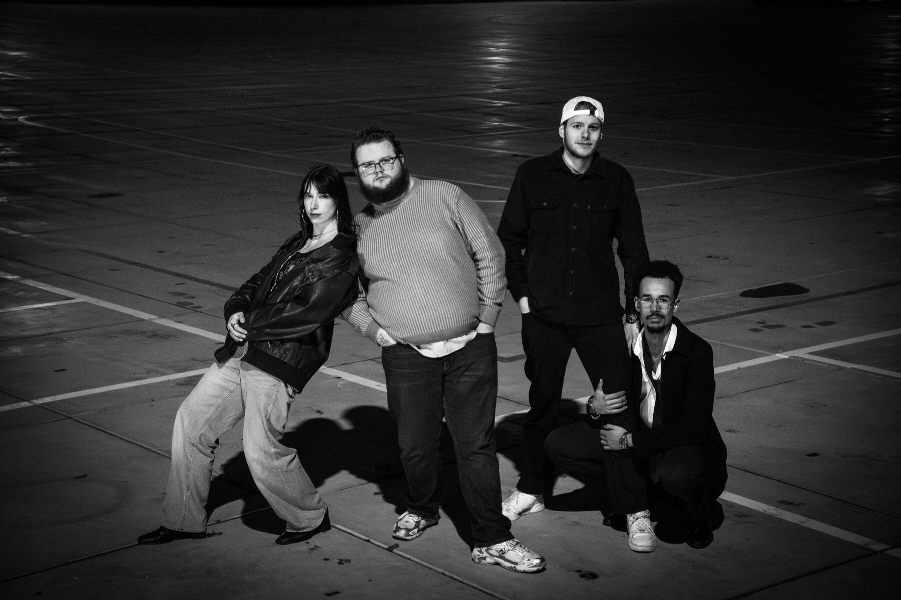
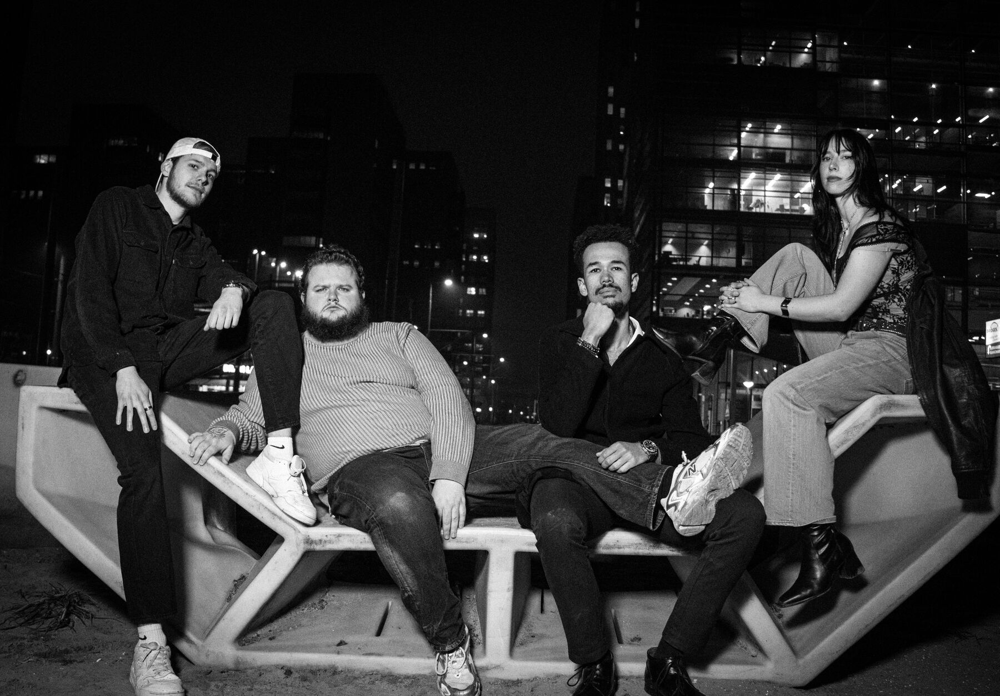
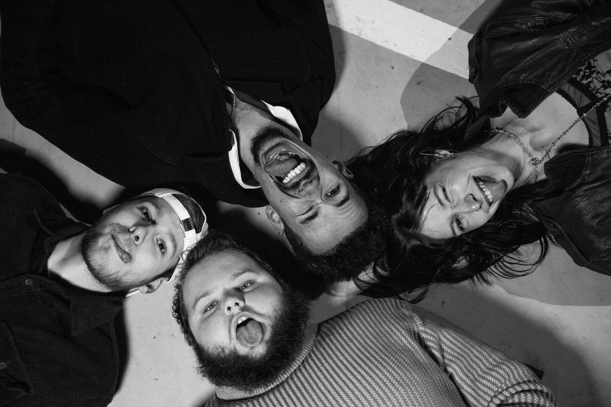

INFERNAL MACHINE is een alt-metalband uit Zuid-Holland. Grunge, nu metal en een vleugje rap, gespeeld door vier mensen die er niet uitzien alsof ze een metalband hebben. Wie een metalband verwacht met lang zwart haar en een grimmige uitstraling, wordt teleurgesteld. Wie een harde show wil, niet.
INFERNAL MACHINE is an alt-metal band from South Holland, Netherlands. Grunge, nu metal and a dash of rap, played by four people who don't look like they're in a metal band. If you expect long black hair and a straight face, you'll be disappointed. If you want a loud show, you won't.
- GenreGenre
- Alt-metal met grunge, nu metal en rapAlt-metal with grunge, nu metal and rap
- HerkomstFrom
- Zuid-HollandSouth Holland, NL
- BezettingLine-up
- 4 personen, sinds 20254 members, since 2025
- ReleaseRelease
- Debuut-EP POISON[ED], okt 2026Debut EP POISON[ED], Oct 2026
- Voor fans vanFor fans of
- Rage Against the Machine, System of a Down, Korn, Nirvana, Alice in Chains
BiografieBiography
Machine infernale was ooit de naam voor een zelfgebouwd wapen, zo verwoestend dat het naar de hel werd vernoemd. De band zelf ziet er een stuk onschuldiger uit. Wie de vier bandleden op straat tegenkomt, denkt niet aan metal. Wie ze live ziet, wel.
Machine infernale was once the name for a homemade weapon, so destructive it was named after hell itself. The band looks a lot more innocent. Run into the four band members on the street and metal isn't what comes to mind. See them live and it is.
De band begon als een groep vrienden, met onder anderen drummer Bart en gitarist Gino, die samen muziek maakten zonder zanger. Die kwam er met Dylan. Toen de oorspronkelijke bassist naar Frankrijk verhuisde, sloot Anja aan, en dat was meteen raak. Sinds 2025 speelt de band in deze bezetting.
The band started as a group of friends, including drummer Bart and guitarist Gino, playing music without a singer. Dylan filled that spot. When the original bassist moved to France, Anja joined, and it clicked right away. The band has played in this line-up since 2025.
De muziek laat zich moeilijk vangen. Alt-metal is de basis, met de rauwheid van grunge, de groove van nu metal en hier en daar een rapflow. De invloeden zijn te horen zonder dat het een kopie wordt: Rage Against the Machine, System of a Down, Korn, Nirvana en Alice in Chains.
The music is hard to pin down. Alt-metal is the core, with the rawness of grunge, the groove of nu metal and the occasional rap flow. The influences are clear without turning into a copy: Rage Against the Machine, System of a Down, Korn, Nirvana and Alice in Chains.
In oktober 2026 verscheen de debuut-EP POISON[ED], gevierd met een bomvolle releaseparty in NIS Spijkenisse. De vijf nummers delen een losse rode draad van desillusie met de moderne samenleving. Poison gaat over afhankelijkheid van iets dat je tegelijk voedt en vergiftigt, Drop The Act trekt het masker van geforceerde positiviteit en corporate praatjes, Wildfire gaat over een liefde die niet kan bestaan en Sound Of The Collapse volgt iemand die door verslaving de controle verliest. De EP sluit af met Back Home In Derry, een eigen versie van het nummer dat Bobby Sands schreef tijdens zijn hongerstaking in de gevangenis.
In October 2026 the band released its debut EP POISON[ED], celebrated with a packed release party at NIS in Spijkenisse. The five songs share a loose thread of disillusionment with modern society. Poison is about depending on something that feeds and poisons you at the same time, Drop The Act tears the mask off forced positivity and corporate small talk, Wildfire is about a love that can't be, and Sound Of The Collapse follows someone losing control to addiction. The EP closes with Back Home In Derry, the band's take on the song Bobby Sands wrote in prison, about Irish rebels exiled to Australia in 1803.
INFERNAL MACHINE speelde al in Spijkenisse, Rotterdam en Den Haag en is klaar voor meer.
INFERNAL MACHINE has played shows in Spijkenisse, Rotterdam and The Hague and is ready for more. Don't expect straight faces. Do expect a loud show.
- DYLANzangvocals
- GINOgitaarguitar
- ANJAbasbass
- BARTdrumsdrums
In deze bezetting sinds 2025This line-up since 2025
POISON[ED]
Debuut-EP · 5 nummers · oktober 2026Debut EP · 5 tracks · October 2026- 01
POISON
- 02
DROP THE ACT
- 03
WILDFIRE
- 04
SOUND OF THE COLLAPSE
- 05
BACK HOME IN DERRY
Poisoned is the hand [that's feeding us]
Poison
Luistertip: begin bij POISON.Start here: POISON.
Live
Releaseparty · 17 oktober 2026Release party · 17 October 2026NIS Spijkenisse
[bomvolpacked]
Eerder gespeeld in:
Played in:
- Spijkenisse
- Rotterdam
- Den HaagThe Hague
Persfoto'sPress photos
Vrij te gebruiken voor promotieFree to use for promotion
Persfoto INFERNAL MACHINEPress photo INFERNAL MACHINE" loading="lazy">
Persfoto INFERNAL MACHINEPress photo INFERNAL MACHINE" loading="lazy">
Persfoto INFERNAL MACHINEPress photo INFERNAL MACHINE" loading="lazy">
Persfoto INFERNAL MACHINEPress photo INFERNAL MACHINE" loading="lazy">Hoge resolutie (3000 px), in zwart-wit en kleur. Graag vermelden: INFERNAL MACHINE.
High resolution (3000 px), in black & white and colour. Please credit: INFERNAL MACHINE.
PraktischPractical
- SetlengteSet length
- 30 tot 45 minuten30 to 45 minutes
- BezettingLine-up
- Zang, gitaar, bas, drums (4 personen)Vocals, guitar, bass, drums (4 people)
- Backline
- Graag een huisdrumstel met 4 bekkenstatieven en een hi-hatstatief; bekkens, hi-hat en pedalen nemen we zelf mee. Geen versterkers nodig: bas via pedalboard (DI), gitaar via Line 6 POD Go (line).Please provide a house drum kit with 4 cymbal stands and a hi-hat stand; we bring our own cymbals, hi-hat and pedals. No amps needed: bass via pedalboard (DI), guitar via Line 6 POD Go (line).
- MonitoringMonitoring
- Wedges, bij voorkeur 4 mixen (2 tot 3 kan ook). Zang (eigen SM58) plus 2 backing vocals (gitaar en bas).Wedges, preferably 4 mixes (2 to 3 also fine). Lead vocals (own SM58) plus 2 backing vocals (guitar and bass).
- Rider + stageplotRider + stage plot
- Apart bijgevoegd (pdf)Attached separately (pdf)
Contact
Booking & persBooking & press
- ContactpersoonContact
- Dylan Murray
- ddmurray2000@icloud.com
- TelefoonPhone
- 06 14 59 16 09